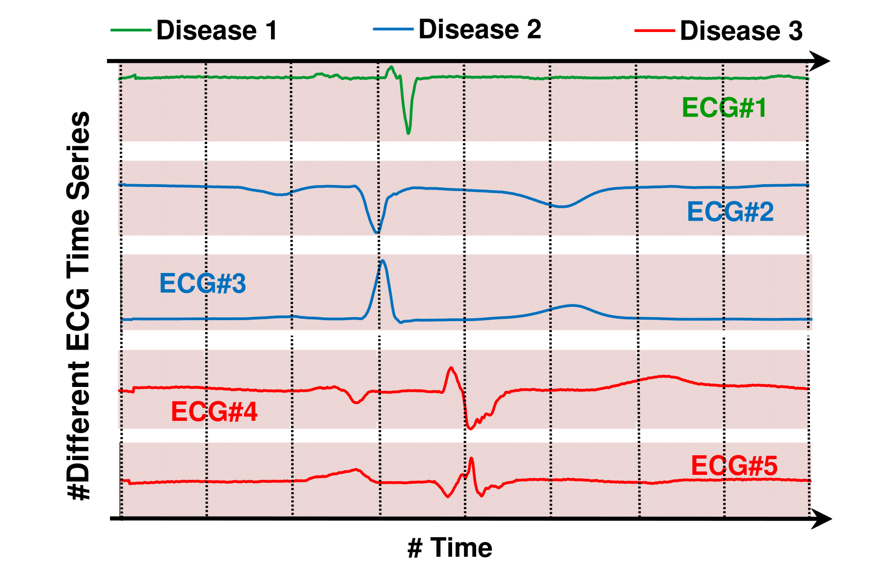
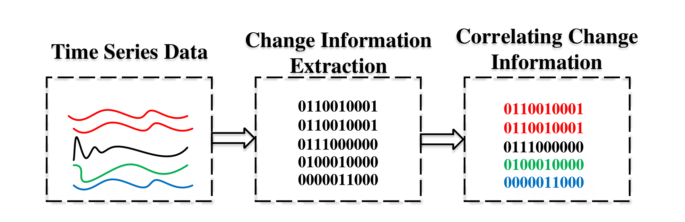
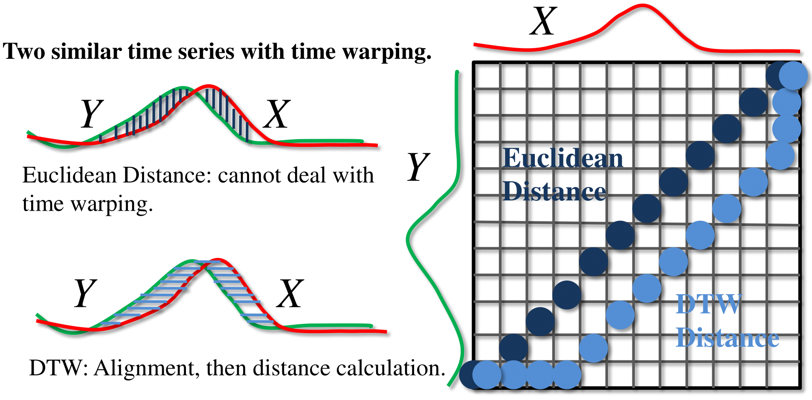
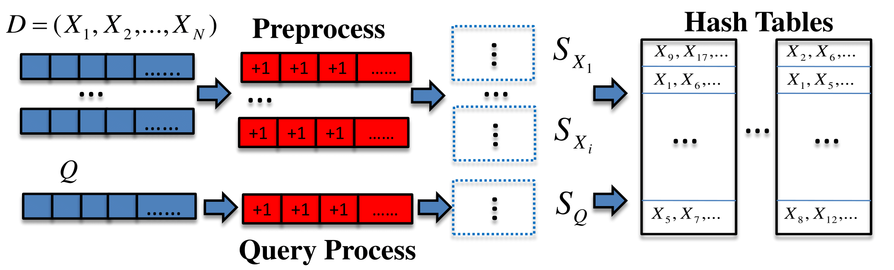

Fast Time Series Nearest Neighbor Search using Hashing for event based correlation measure
Measuring the correlation (or similarity) between different time series is a basic prerequisite for mining time series data.
Traditional measures, such as Dynamic Time Warping (DTW), relies on the notion that two time series are similar if they have a lot of similar sub-patterns. However, there are many real-world scenarios where time series, having different overall patterns (e.g. Periodical, Linear, Random, etc.),
are still of common interest because they all change their behavior simultaneously.
However, despite the importance of heterogeneous time data, there has been little prior work addressing the correlation between two types of heterogeneous time series data.
In this project, we propose a change based correlation measure, for mining heterogeneous time series.
Our measure is ideally suited for heterogeneous time series data commonly found in medical and high performance computing (HPC) domain.
Furthermore, our measure admits locality sensitive hashing (LSH) scheme, leading to efficient sub-linear search and clustering algorithms.
Existing of LHS makes our proposed measure ideal and practical for massive datasets.
Rigorous experimental evaluations over eleven real and synthetic datasets clearly demonstrates the significant effectiveness and efficiency of our proposal over popular measures.


Fast Time Series Nearest Neighbor Search for DTW measure
Similarity search on time series data is ubiquitous in data-driven applications.
Dynamic Time Warping or DTW is the most widely used similarity measure because
it can do both alignment and matching on time series data. However, the alignment
makes DTW slow. In order to speed up the similarity search with DTW,
branch and bound based pruning strategies are common. However, these branch
and bounds criteria is ineffective for long time series datasets. To circumvent
this issue, we design an efficient and approximate hashing scheme which is much
faster than the state-of-the-art branch and bound searching technique: the UCR
suite. Empirical results on two large-scale benchmark time series data show that
our proposed method can be around 20 times faster than the state-of-the-art package
(UCR suite) without any significant loss in performance.


Time Series Prediction
Using Unsupervised feature extraction methods on time series and do prediction on time series data. This is our current research direction.